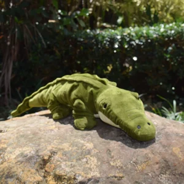
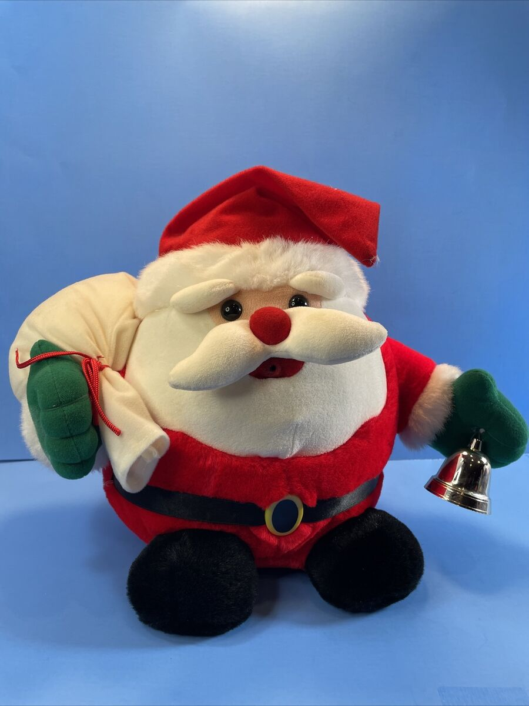

Fjäril

Krokodil
Nyss så träffade jag en krokodil
Lejon lejon, massa lejon
Det här är våra pingviner som har ett eget litet krypin med ett kallare klimat
Många av våra kaniner är till salu i våran butik
Här skriver jag lite text
Här kommer det lite mer text